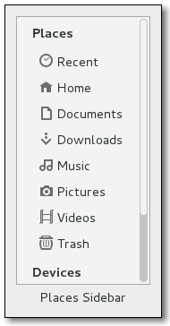

| Top | Description | Object Hierarchy | Implemented Interfaces | Properties | Signals |
GtkPlacesSidebarGtkPlacesSidebar — Sidebar that displays frequently-used places in the file system |
 |
#include <gtk/gtk.h>
GtkPlacesSidebar;
enum GtkPlacesOpenFlags;
GtkWidget * gtk_places_sidebar_new (void);
void gtk_places_sidebar_set_open_flags (GtkPlacesSidebar *sidebar,
GtkPlacesOpenFlags flags);
GtkPlacesOpenFlags gtk_places_sidebar_get_open_flags (GtkPlacesSidebar *sidebar);
void gtk_places_sidebar_set_location (GtkPlacesSidebar *sidebar,
GFile *location);
GFile * gtk_places_sidebar_get_location (GtkPlacesSidebar *sidebar);
void gtk_places_sidebar_set_show_desktop (GtkPlacesSidebar *sidebar,
gboolean show_desktop);
gboolean gtk_places_sidebar_get_show_desktop (GtkPlacesSidebar *sidebar);
void gtk_places_sidebar_add_shortcut (GtkPlacesSidebar *sidebar,
GFile *location);
void gtk_places_sidebar_remove_shortcut (GtkPlacesSidebar *sidebar,
GFile *location);
GSList * gtk_places_sidebar_list_shortcuts (GtkPlacesSidebar *sidebar);
GFile * gtk_places_sidebar_get_nth_bookmark (GtkPlacesSidebar *sidebar,
gint n);
gboolean gtk_places_sidebar_get_show_connect_to_server
(GtkPlacesSidebar *sidebar);
void gtk_places_sidebar_set_show_connect_to_server
(GtkPlacesSidebar *sidebar,
gboolean show_connect_to_server);
GObject +----GInitiallyUnowned +----GtkWidget +----GtkContainer +----GtkBin +----GtkScrolledWindow +----GtkPlacesSidebar
"local-only" gboolean : Read / Write "location" GFile* : Read / Write "open-flags" GtkPlacesOpenFlags : Read / Write "show-connect-to-server" gboolean : Read / Write "show-desktop" gboolean : Read / Write
"drag-action-ask" :Run Last"drag-action-requested" :Run Last"drag-perform-drop" :Run First"open-location" :Run First"populate-popup" :Run First"show-connect-to-server" :Run First"show-error-message" :Run First
GtkPlacesSidebar is a widget that displays a list of frequently-used places in the file system: the user's home directory, the user's bookmarks, and volumes and drives. This widget is used as a sidebar in GtkFileChooser and may be used by file managers and similar programs.
The places sidebar displays drives and volumes, and will automatically mount or unmount them when the user selects them.
Applications can hook to various signals in the places sidebar to customize its behavior. For example, they can add extra commands to the context menu of the sidebar.
While bookmarks are completely in control of the user, the places sidebar also
allows individual applications to provide extra shortcut folders that are unique
to each application. For example, a Paint program may want to add a shortcut
for a Clipart folder. You can do this with gtk_places_sidebar_add_shortcut().
To make use of the places sidebar, an application at least needs to connect
to the "open-location" signal. This is emitted when the
user selects in the sidebar a location to open. The application should also
call gtk_places_sidebar_set_location() when it changes the currently-viewed
location.
typedef enum {
GTK_PLACES_OPEN_NORMAL = 1 << 0,
GTK_PLACES_OPEN_NEW_TAB = 1 << 1,
GTK_PLACES_OPEN_NEW_WINDOW = 1 << 2
} GtkPlacesOpenFlags;
These flags serve two purposes. First, the application can call gtk_places_sidebar_set_open_flags()
using these flags as a bitmask. This tells the sidebar that the application is able to open
folders selected from the sidebar in various ways, for example, in new tabs or in new windows in
addition to the normal mode.
Second, when one of these values gets passed back to the application in the "open-location" signal, it means that the application should open the selected location in the normal way, in a new tab, or in a new window. The sidebar takes care of determining the desired way to open the location, based on the modifier keys that the user is pressing at the time the selection is made.
If the application never calls gtk_places_sidebar_set_open_flags(), then the sidebar will only
use GTK_PLACES_OPEN_NORMAL in the "open-location" signal. This is the
default mode of operation.
| This is the default mode that GtkPlacesSidebar uses if no other flags are specified. It indicates that the calling application should open the selected location in the normal way, for example, in the folder view beside the sidebar. | |
When passed to gtk_places_sidebar_set_open_flags(), this indicates
that the application can open folders selected from the sidebar in new tabs. This value
will be passed to the "open-location" signal when the user selects
that a location be opened in a new tab instead of in the standard fashion.
|
|
Similar to GTK_PLACES_OPEN_NEW_TAB, but indicates that the application
can open folders in new windows.
|
GtkWidget * gtk_places_sidebar_new (void);
Creates a new GtkPlacesSidebar widget.
The application should connect to at least the "open-location" signal to be notified when the user makes a selection in the sidebar.
Returns : |
a newly created GtkPlacesSidebar |
Since 3.10
void gtk_places_sidebar_set_open_flags (GtkPlacesSidebar *sidebar,GtkPlacesOpenFlags flags);
Sets the way in which the calling application can open new locations from the places sidebar. For example, some applications only open locations "directly" into their main view, while others may support opening locations in a new notebook tab or a new window.
This function is used to tell the places sidebar about the ways in which the
application can open new locations, so that the sidebar can display (or not)
the "Open in new tab" and "Open in new window" menu items as appropriate.
When the "open-location" signal is emitted, its flags
argument will be set to one of the flags that was passed in
gtk_places_sidebar_set_open_flags().
Passing 0 for flags will cause GTK_PLACES_OPEN_NORMAL to always be sent
to callbacks for the "open-location" signal.
|
a places sidebar |
|
Bitmask of modes in which the calling application can open locations |
Since 3.10
GtkPlacesOpenFlags gtk_places_sidebar_get_open_flags (GtkPlacesSidebar *sidebar);
Gets the open flags.
|
a GtkPlacesSidebar |
Returns : |
the GtkPlacesOpenFlags of sidebar
|
Since 3.10
void gtk_places_sidebar_set_location (GtkPlacesSidebar *sidebar,GFile *location);
Sets the location that is being shown in the widgets surrounding the
sidebar, for example, in a folder view in a file manager. In turn, the
sidebar will highlight that location if it is being shown in the list of
places, or it will unhighlight everything if the location is not among the
places in the list.
|
a places sidebar |
|
location to select, or NULL for no current path. [allow-none] |
Since 3.10
GFile * gtk_places_sidebar_get_location (GtkPlacesSidebar *sidebar);
Gets the currently-selected location in the sidebar. This can be NULL when
nothing is selected, for example, when gtk_places_sidebar_set_location() has
been called with a location that is not among the sidebar's list of places to
show.
You can use this function to get the selection in the sidebar. Also, if you
connect to the "popup-menu" signal, you can use this
function to get the location that is being referred to during the callbacks
for your menu items.
|
a places sidebar |
Returns : |
a GFile with the selected location, or NULL if nothing is visually selected. [transfer full] |
Since 3.10
void gtk_places_sidebar_set_show_desktop (GtkPlacesSidebar *sidebar,gboolean show_desktop);
Sets whether the sidebar should show an item for the Desktop folder.
The default value for this option is determined by the desktop
environment and the user's configuration, but this function can be
used to override it on a per-application basis.
|
a places sidebar |
|
whether to show an item for the Desktop folder |
Since 3.10
gboolean gtk_places_sidebar_get_show_desktop (GtkPlacesSidebar *sidebar);
Returns the value previously set with gtk_places_sidebar_set_show_desktop()
|
a places sidebar |
Returns : |
TRUE if the sidebar will display a builtin shortcut to the desktop folder. |
Since 3.10
void gtk_places_sidebar_add_shortcut (GtkPlacesSidebar *sidebar,GFile *location);
Applications may want to present some folders in the places sidebar if they could be immediately useful to users. For example, a drawing program could add a "/usr/share/clipart" location when the sidebar is being used in an "Insert Clipart" dialog box.
This function adds the specified location to a special place for immutable
shortcuts. The shortcuts are application-specific; they are not shared
across applications, and they are not persistent. If this function
is called multiple times with different locations, then they are added
to the sidebar's list in the same order as the function is called.
|
a places sidebar |
|
location to add as an application-specific shortcut |
Since 3.10
void gtk_places_sidebar_remove_shortcut (GtkPlacesSidebar *sidebar,GFile *location);
Removes an application-specific shortcut that has been previously been
inserted with gtk_places_sidebar_add_shortcut(). If the location is not a
shortcut in the sidebar, then nothing is done.
|
a places sidebar |
|
location to remove |
Since 3.10
GSList * gtk_places_sidebar_list_shortcuts (GtkPlacesSidebar *sidebar);
Gets the list of shortcuts.
|
a places sidebar | ||
Returns : |
A GSList of GFile of the locations that have been added as
application-specific shortcuts with gtk_places_sidebar_add_shortcut().
To free this list, you can use
|
Since 3.10
GFile * gtk_places_sidebar_get_nth_bookmark (GtkPlacesSidebar *sidebar,gint n);
This function queries the bookmarks added by the user to the places sidebar, and returns one of them. This function is used by GtkFileChooser to implement the "Alt-1", "Alt-2", etc. shortcuts, which activate the cooresponding bookmark.
|
a places sidebar |
|
index of the bookmark to query |
Returns : |
The bookmark specified by the index n, or
NULL if no such index exist. Note that the indices start at 0, even though
the file chooser starts them with the keyboard shortcut "Alt-1". [transfer full]
|
Since 3.10
gboolean gtk_places_sidebar_get_show_connect_to_server
(GtkPlacesSidebar *sidebar);
Returns the value previously set with gtk_places_sidebar_set_show_connect_to_server()
|
a places sidebar |
Returns : |
TRUE if the sidebar will display a "Connect to Server" item. |
Since 3.10
void gtk_places_sidebar_set_show_connect_to_server (GtkPlacesSidebar *sidebar,gboolean show_connect_to_server);
Sets whether the sidebar should show an item for connecting to a network server; this is off by default.
An application may want to turn this on if it implements a way for the user to connect
to network servers directly.
|
a places sidebar |
|
whether to show an item for the Connect to Server command |
Since 3.10
"local-only" property"local-only" gboolean : Read / Write
Whether the sidebar only includes local files.
Default value: FALSE
"open-flags" property"open-flags" GtkPlacesOpenFlags : Read / Write
Modes in which the calling application can open locations selected in the sidebar.
Default value: GTK_PLACES_OPEN_NORMAL
"show-connect-to-server" property"show-connect-to-server" gboolean : Read / Write
Whether the sidebar includes a builtin shortcut to a 'Connect to server' dialog.
Default value: FALSE
"show-desktop" property"show-desktop" gboolean : Read / Write
Whether the sidebar includes a builtin shortcut to the Desktop folder.
Default value: FALSE
"drag-action-ask" signalgint user_function (GtkPlacesSidebar *sidebar,
gint actions,
gpointer user_data) : Run Last
The places sidebar emits this signal when it needs to ask the application to pop up a menu to ask the user for which drag action to perform.
|
the object which received the signal. |
|
Possible drag actions that need to be asked for. |
|
user data set when the signal handler was connected. |
Returns : |
the final drag action that the sidebar should pass to the drag side of the drag-and-drop operation. |
Since 3.10
"drag-action-requested" signalgint user_function (GtkPlacesSidebar *sidebar,
GdkDragContext *context,
GObject *dest_file,
gpointer source_file_list,
gpointer user_data) : Run Last
When the user starts a drag-and-drop operation and the sidebar needs to ask the application for which drag action to perform, then the sidebar will emit this signal.
The application can evaluate the context for customary actions, or
it can check the type of the files indicated by source_file_list against the
possible actions for the destination dest_file.
The drag action to use must be the return value of the signal handler.
|
the object which received the signal. |
|
GdkDragContext with information about the drag operation |
|
GFile with the tentative location that is being hovered for a drop |
|
List of GFile that are being dragged. [element-type GFile][transfer none] |
|
user data set when the signal handler was connected. |
Returns : |
The drag action to use, for example, GDK_ACTION_COPY
or GDK_ACTION_MOVE, or 0 if no action is allowed here (i.e. drops
are not allowed in the specified dest_file). |
Since 3.10
"drag-perform-drop" signalvoid user_function (GtkPlacesSidebar *sidebar,
GObject *dest_file,
gpointer source_file_list,
gint action,
gpointer user_data) : Run First
The places sidebar emits this signal when the user completes a
drag-and-drop operation and one of the sidebar's items is the
destination. This item is in the dest_file, and the
source_file_list has the list of files that are dropped into it and
which should be copied/moved/etc. based on the specified action.
|
the object which received the signal. |
|
Destination GFile. |
|
GList of GFile that got dropped. [element-type GFile][transfer none] |
|
Drop action to perform. |
|
user data set when the signal handler was connected. |
Since 3.10
"open-location" signalvoid user_function (GtkPlacesSidebar *sidebar,
GObject *location,
GtkPlacesOpenFlags open_flags,
gpointer user_data) : Run First
The places sidebar emits this signal when the user selects a location in it. The calling application should display the contents of that location; for example, a file manager should show a list of files in the specified location.
|
the object which received the signal. |
|
GFile to which the caller should switch. |
|
a single value from GtkPlacesOpenFlags specifying how the location should be opened. |
|
user data set when the signal handler was connected. |
Since 3.10
"populate-popup" signalvoid user_function (GtkPlacesSidebar *sidebar,
GObject *menu,
GObject *selected_item,
GObject *selected_volume,
gpointer user_data) : Run First
The places sidebar emits this signal when the user invokes a contextual menu on one of its items. In the signal handler, the application may add extra items to the menu as appropriate. For example, a file manager may want to add a "Properties" command to the menu.
It is not necessary to store the selected_item for each menu item;
during their GtkMenuItem::activate callbacks, the application can use
gtk_places_sidebar_get_location() to get the file to which the item
refers.
The selected_item argument may be NULL in case the selection refers to
a volume. In this case, selected_volume will be non-NULL. In this case,
the calling application will have to g_object_ref() the selected_volume and
keep it around for the purposes of its menu item's "activate" callback.
The menu and all its menu items are destroyed after the user
dismisses the menu. The menu is re-created (and thus, this signal is
emitted) every time the user activates the contextual menu.
|
the object which received the signal. |
|
a GtkMenu. |
|
GFile with the item to which the menu should refer, or NULL in the case of a selected_volume. |
|
GVolume if the selected item is a volume, or NULL if it is a file. |
|
user data set when the signal handler was connected. |
Since 3.10
"show-connect-to-server" signalvoid user_function (GtkPlacesSidebar *sidebar,
gpointer user_data) : Run First
The places sidebar emits this signal when it needs the calling
application to present an way to connect directly to a network server.
For example, the application may bring up a dialog box asking for
a URL like "sftp://ftp.example.com". It is up to the application to create
the corresponding mount by using, for example, g_file_mount_enclosing_volume().
|
the object which received the signal. |
|
user data set when the signal handler was connected. |
Since 3.10
"show-error-message" signalvoid user_function (GtkPlacesSidebar *sidebar,
gchar *primary,
gchar *secondary,
gpointer user_data) : Run First
The places sidebar emits this signal when it needs the calling application to present an error message. Most of these messages refer to mounting or unmounting media, for example, when a drive cannot be started for some reason.
|
the object which received the signal. |
|
primary message with a summary of the error to show. |
|
secondary message with details of the error to show. |
|
user data set when the signal handler was connected. |
Since 3.10